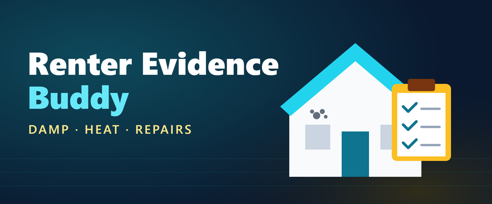
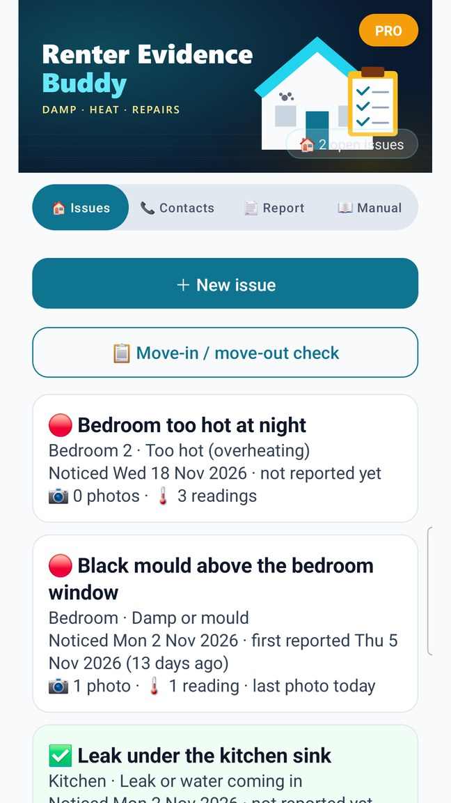
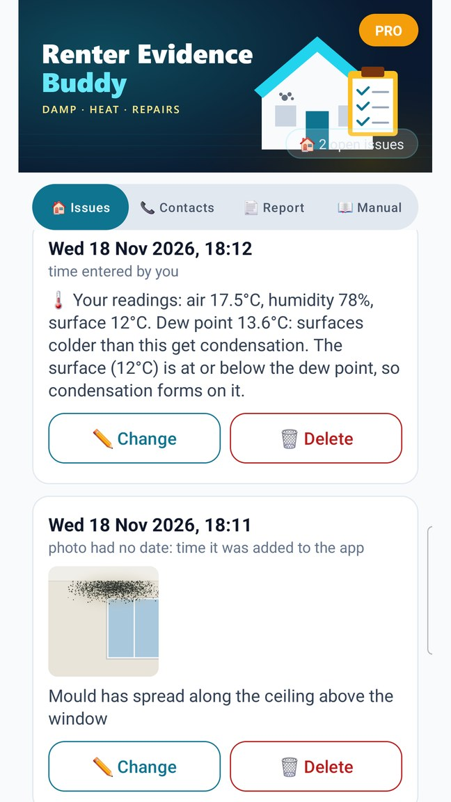
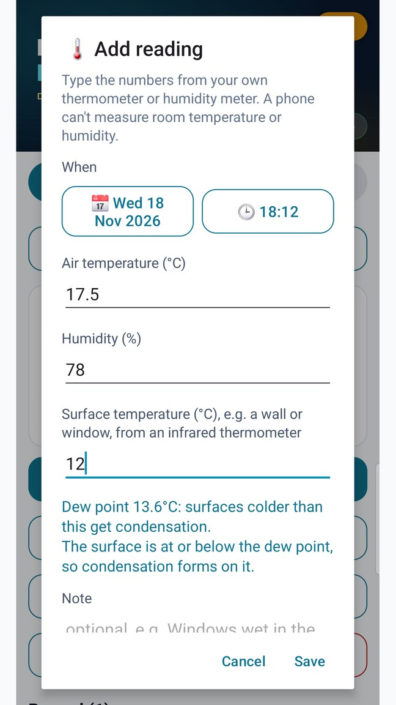
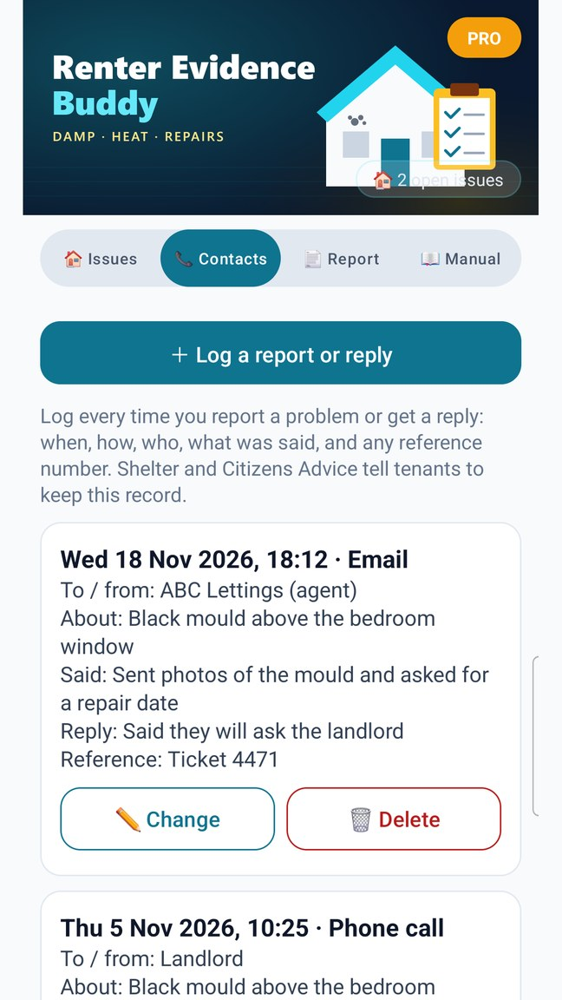
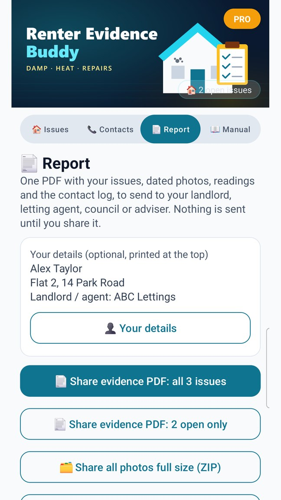
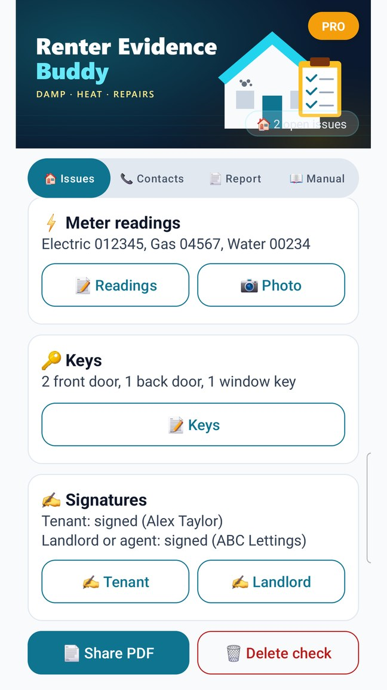
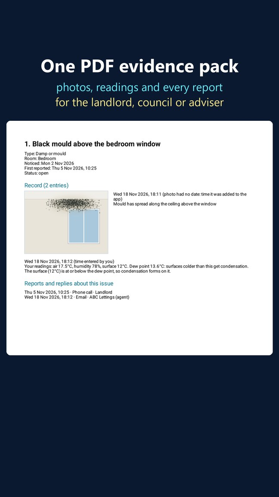

Everything below is the same text as the Manual in the app (📖 Manual tab).
Renter Evidence Buddy helps tenants keep a record of problems in their home and of every time they reported them. Advisers such as Shelter and Citizens Advice tell tenants to keep this kind of record: dated photos, notes, and when, how and to whom each problem was reported.
The app puts it all in one PDF you can send to your landlord, letting agent, council or adviser.
No sign-in and no ads. Everything stays on this phone until you share it yourself. The app makes a record; it doesn't give legal advice.
Tap ＋ New issue for each problem: give it a short title, choose the type (for example damp or mould, a leak, too hot, too cold, no hot water) and the room, and the date you first noticed it.
Tap an issue to open it. There you can add photos, readings and notes, log a report, set a photo reminder (Pro), mark it fixed, change it or delete it.
The list shows when each issue was first reported and how many days ago, and how long ago the last photo was taken.
Tap 📷 Add photo, then:
Every photo shows where its time came from, in the app and in the PDF. You can add a note to each photo, for example what has changed.
Take a new photo of the same place every week or two, from the same spot, so the record shows whether the problem is getting worse. Photos are copied into the app's own storage, so they stay even if you delete them from your gallery.
A phone can't measure room temperature or humidity, so type in the numbers from your own thermometer or humidity meter (a cheap digital one is fine). The app always marks them as your readings.
The dew point uses the Magnus formula: γ = ln(RH/100) + 17.62·T/(243.12 + T), dew point = 243.12·γ/(17.62 − γ).
Readings at the same time each day (for example every morning) are easiest to compare.
For an issue of the type "Too hot (overheating)", add temperature readings during the day and at night. The issue then shows how many readings were at or above your limit (25°C at first), on how many days, how many were at night (22:00 to 07:00) and on how many nights, and the highest reading.
Change the limit in 📄 Report › ⚙️ Settings › 🌡️ Overheating limit (24 to 28°C).
Tap 📝 Add note for anything without a photo, for example "Water dripping from the ceiling light after rain" or "Heating off all day". Choose the date and time it happened.
Log every time you report a problem or get a reply: tap 📞 Log a report on an issue, or ＋ Log a report or reply on the 📞 Contacts tab. Add:
The first contact about an issue counts as the date it was first reported.
On an issue, tap ⏰ Reminder and choose every 7, 14 or 28 days. When the newest photo is older than that, the phone shows a reminder (about once a day, not at an exact time). The issue is marked "A new photo is due" too. Reminders stop when the issue is marked fixed.
Android asks once whether the app may send notifications.
On the 🏠 Issues tab, tap 📋 Move-in / move-out check, then 🔑 Move-in check or 📦 Move-out check. Go room by room: choose the condition (good, fair or poor), write notes, and take photos. Add or remove rooms as you need. Then add meter readings (with a photo of each meter) and the keys you got or returned.
At the end, the tenant and the landlord or agent can each type their name and sign on the screen with a finger. Tap 📄 Share PDF to send the check. A move-in check with photos helps when the deposit is returned.
The 📄 Report tab makes one PDF with:
Share all issues, or only the open ones. 🗂️ Share all photos full size (ZIP, Pro) sends the original photos too.
The PDF explains where each time came from and that temperatures and humidity were measured by you.
Free: one issue with unlimited photos, readings and notes, the dew point, the contact log, and the evidence PDF.
Pro (one payment, for life, no subscription):
Tap GO PRO at the top. Bought Pro before, or on a new phone? Open GO PRO and tap Restore purchase (same Google account).
Everything (issues, photos, readings, notes, contacts, checks, signatures and settings) is kept in the app's own storage on this phone. There is no account and nothing is uploaded. Backups are switched off, so the record isn't copied to Google.
The app doesn't ask for camera or storage permission: photos come from the phone's camera app or Android's photo picker. It only asks for notifications if you switch on photo reminders.
⚙️ Settings shows how much space photos use. 🗑️ Delete everything deletes all of it. Uninstalling the app deletes it too, so share a report first if you need it.
Will the council or a court accept it? That is up to them. Advisers ask tenants to keep dated photos, notes and a record of every report; this app keeps them together and dated.
Why can't the app measure humidity? Phones have no humidity sensor, and the phone's own temperature is not the room's. Your own meter's readings are better evidence.
Where can I get advice? Shelter, Citizens Advice, your council's private housing team, or a tenants' union where you live.
Renter Evidence Buddy v1.1 (Build 2)
Publisher: AppStack Studio
| Question | Many property apps | Renter Evidence Buddy |
|---|---|---|
| Who is it for? | Mostly made for landlords and letting agents | Made for tenants |
| Price | Often a subscription | Free to start; Pro is one payment for life (no subscription) |
| Where is the record kept? | Often in an online account | Only on your phone, no account, no ads |

1. Issues
Each problem with its room, when you noticed it, when you first reported it, and its photos and readings.

2. The record
Dated photos with notes, and your readings with the dew point worked out.

3. Readings
Type in your own meter's numbers; the app shows whether a wall or window gets condensation.

4. Contacts
Every report and reply: when, how, who, what was said and the reference number.

5. Report
Your details and one PDF with everything, for all issues or only the open ones.

6. Move-in check (Pro)
Room by room with photos, meter readings, keys and two signatures.

7. PDF evidence pack
Photos with their dates, readings and the reports about each issue.
Screenshots: Renter Evidence Buddy 1.0 on a Samsung Galaxy S24, with sample details typed in and a drawn sample photo.